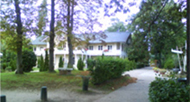

Vous êtes en quête d'idées neuves pour rendre plus efficaces vos projets de développement logiciels ?
Vous souhaitez en savoir plus sur les méthodes agiles, leurs bénéfices, leurs limites... Vous avez mis en place des pratiques agiles au sein de vos projets et vous souhaitez confronter vos retours d'expérience à ceux d'autres praticiens...
- Devenez sponsor
- Devenez orateur
Découvrez comment devenir sponsor officiel de la conférence
Nous recherchons des orateurs pour la conférence: Envoyez-nous vos propositions de sessions.
Une conférence pour tous les intervenants des projets logiciels
Chefs de projet, clients, décideurs, développeurs...
Loin des conférences "académiques" ou des événements commerciaux, le succès du format Agile s'explique par son orientation pragmatique.
Avec plus de 160 inscrits pour sa troisième édition en 2008, Agile France est le rendez-vous à ne pas manquer si vous souhaitez des réponses concrètes, des idées que vous pouvez immédiatement mettre en pratique.
De nombreux thèmes sont abordés:
Par exemple :
- Construction logicielle (TDD, refactoring, binômage, intégration continue...)
- Animation d'équipe et leadership
- Outils
- Agilité : performance et culture d' organisation
- L'impact dans l'entreprise et l'organisation
- Expérience utilisateurs
Edition 2010 : un décor hors du commun !
Situé sur une île en plein milieu du bois de Vincennes, Le Chalet de la Porte Jaune est noyé dans la verdure. Une pause sous un arbre du jardin ou une promenade en barque entre deux ateliers... A vous de planifier vos journées au rythme des lieux.
Bâtiment classé monument historique, le Chalet est aussi réputé pour sa restauration de très haute qualité. Tous vos déjeuners, pauses et dîners seront concoctés par l'ancien chef du Train Bleu dont la réputation n'est plus à faire.